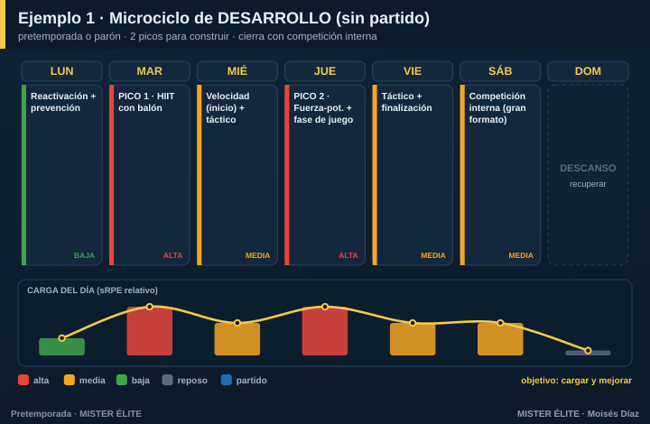
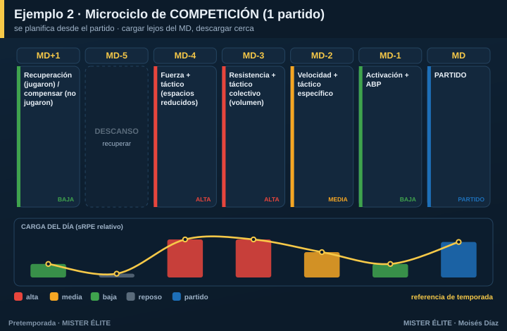
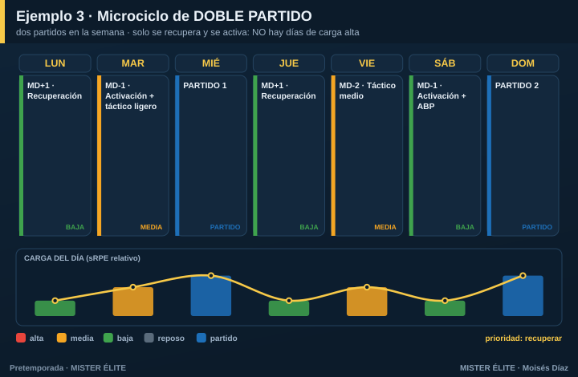
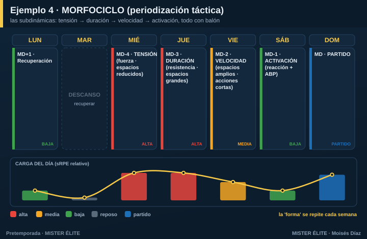

Módulo 05 · Diseña tu propio microciclo
Los planes de este curso son plantillas. Pero el buen entrenador no copia: entiende la lógica y construye el suyo para su contexto, su calendario y su semana. Este módulo te enseña a crear un microciclo desde cero, sus principios y varios ejemplos distintos.
El microciclo es la unidad de trabajo. Es la semana. Si sabes diseñar un microciclo, sabes planificar: una pretemporada son 6-8 microciclos encadenados, y una temporada, una sucesión de ellos.
Los 7 principios del diseño del microciclo
Son la base, vengas de donde vengas (periodización tradicional, táctica o estructurada). Si los respetas, tu semana funcionará.
1. Empieza desde el partido. El microciclo no se planifica de lunes a domingo: se planifica alrededor del partido. Marca el día de partido (MD) y el descanso obligatorio; todo lo demás se coloca en relación a ellos.
2. Cada día tiene un propósito (el perfil MD-x). No hay días "de entrenar por entrenar". Cada día se nombra por su distancia al partido (MD-4, MD-3… MD-1) y tiene un objetivo de carga y contenido distinto.
3. Carga lejos del partido, descarga cerca. La mayor carga e intensidad va en los días alejados del partido (cuando el jugador está recuperado y hay margen para recuperar). Según se acerca el MD, la carga baja (alternancia horizontal). Nunca llegues fundido al partido.
4. Alterna duro y suave (ondulación). Días altos y bajos intercalados. Evita la semana plana: la monotonía > 2 (carga media ÷ desviación estándar) fatiga sin construir y aumenta el riesgo.
5. Respeta las 48 h. Entre dos estímulos máximos de la misma capacidad (fuerza máxima, sprint, HIIT duro) deja 48 horas. Si no, no hay supercompensación.
6. Sigue la lógica interna: recuperación → adquisición → activación. Tras el partido o el día duro, recuperas. En el centro de la semana, adquieres (los estímulos fuertes). Antes del partido, activas (afilar, no cansar). Es la estructura que propone Buchheit para el microciclo de élite.
7. Mantén la “forma”, cambia los contenidos. La estructura de la semana (qué día es duro, cuál suave) se repite semana a semana. Lo que cambia son los contenidos y el énfasis. Esa repetición es la que crea los automatismos (de ahí el "morfociclo": misma forma, distinto contenido).
Método paso a paso: construye tu microciclo
Sigue estos 6 pasos y tendrás tu semana montada:
Paso 1 · Fija los puntos fijos. Marca el/los partido(s) y el día de descanso obligatorio. Son inamovibles; el resto se organiza entre ellos.
Paso 2 · Etiqueta los días en MD-x. Cuenta hacia atrás desde el partido: MD-1 (víspera), MD-2, MD-3, MD-4… y hacia delante MD+1 (día después).
Paso 3 · Asigna una orientación dominante por día. Un objetivo claro cada día (resistencia, fuerza-potencia, velocidad, táctico…), nunca "todo a la vez". Coloca los dominantes exigentes lejos del partido.
Paso 4 · Dibuja la curva de carga. Pon los picos (alta) en los días alejados del partido y la descarga (baja) en los cercanos. Comprueba que ondula (duro-suave) y que no hay dos picos de la misma capacidad sin 48 h.
Paso 5 · Encaja fuerza, velocidad y prevención. La velocidad y la potencia, con el jugador fresco y al inicio de la sesión. La prevención (Nordic, core), casi a diario en dosis cortas. Respeta la concurrencia (la calidad antes que el volumen).
Paso 6 · Comprueba. Pásale el checklist: ¿una orientación por día? ¿ondula? ¿48 h entre picos? ¿descarga antes del partido? ¿prevención 2-3 veces? ¿avanza el modelo de juego? Si todo está, listo.
Ejemplos diferentes (la misma lógica, distintos escenarios)
El mismo método produce semanas muy distintas según tu situación. Mira cuatro casos:
Ejemplo 1 · Semana de desarrollo (sin partido)
Pretemporada o parón, cuando no hay partido y el objetivo es construir. Te lo puedes permitir: dos picos de carga alta, separados, y cierras con una competición interna.

Ejemplo 2 · Semana de competición con 1 partido (MD-x)
La semana de temporada más común. Se planifica desde el partido: carga alta en MD-4 y MD-3, se baja en MD-2 y MD-1. Es la referencia que adaptan los seis planes del curso.

Ejemplo 3 · Semana con doble partido
Dos partidos (p. ej. miércoles y domingo). Aquí el principio manda: con dos partidos no hay días de carga alta, solo recuperar y activar. Querer "entrenar fuerte" entre dos partidos es el error clásico.

Ejemplo 4 · El morfociclo (periodización táctica)
La versión de Vítor Frade: las subdinámicas se reparten en tres días de adquisición —tensión (fuerza, espacios reducidos), duración (resistencia, espacios grandes), velocidad (espacios amplios, acciones cortas)— más la activación. Todo con balón, y la forma se repite cada semana.

Lo que NO cambia entre los cuatro: se parte del partido, se carga lejos y se descarga cerca, se ondula, se respetan las 48 h y la prevención está siempre. Lo que cambia: el número de picos y el peso de cada día, según haya 0, 1 o 2 partidos.
Plantilla en blanco: diseña el tuyo
Cópiala y rellénala con tu semana real:
| Día | MD-x | Carga (alta/media/baja) | Orientación dominante | Fuerza / velocidad / prevención |
|---|---|---|---|---|
| LUN | ||||
| MAR | ||||
| MIÉ | ||||
| JUE | ||||
| VIE | ||||
| SÁB | ||||
| DOM |
Antes de darlo por bueno, el checklist: - [ ] ¿Partí desde el partido y marqué el descanso? - [ ] ¿Cada día tiene una orientación dominante? - [ ] ¿Los picos están lejos del partido y descargo al acercarme? - [ ] ¿La carga ondula (duro-suave)? ¿Monotonía < 2? - [ ] ¿Hay 48 h entre estímulos máximos de la misma capacidad? - [ ] ¿Velocidad/potencia con el jugador fresco y prevención 2-3 veces?
En una frase
Un microciclo se construye desde el partido: etiqueta los días en MD-x, da a cada uno una orientación, pon los picos lejos y la descarga cerca, ondula, respeta las 48 h y repite la forma cada semana. Cambia el escenario (0, 1 o 2 partidos), no los principios.
Con esto ya no dependes de plantillas: sabes diseñar la semana que tu equipo necesita.